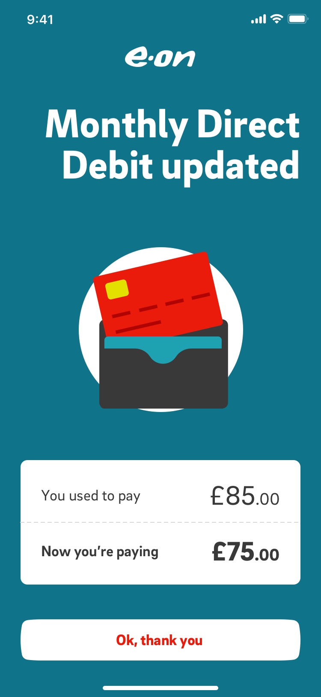
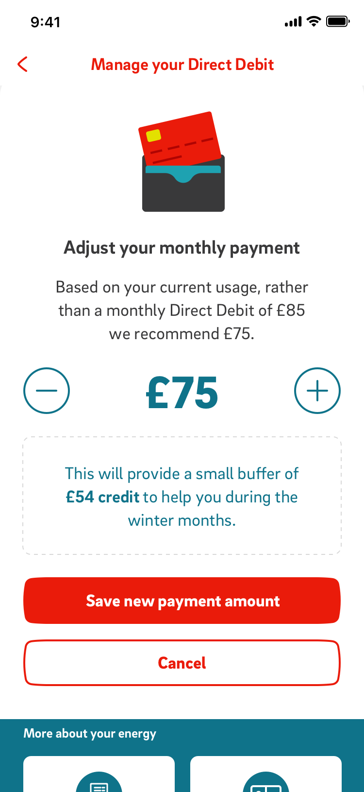
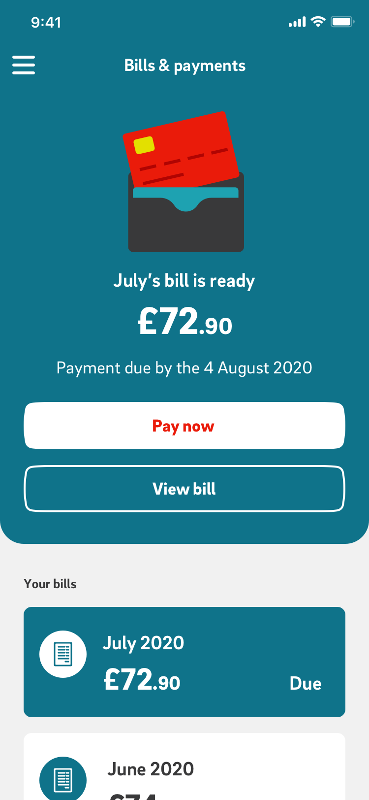
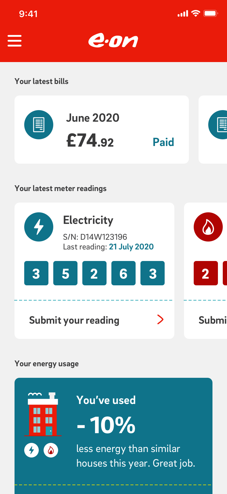
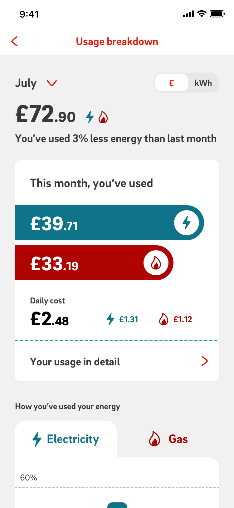
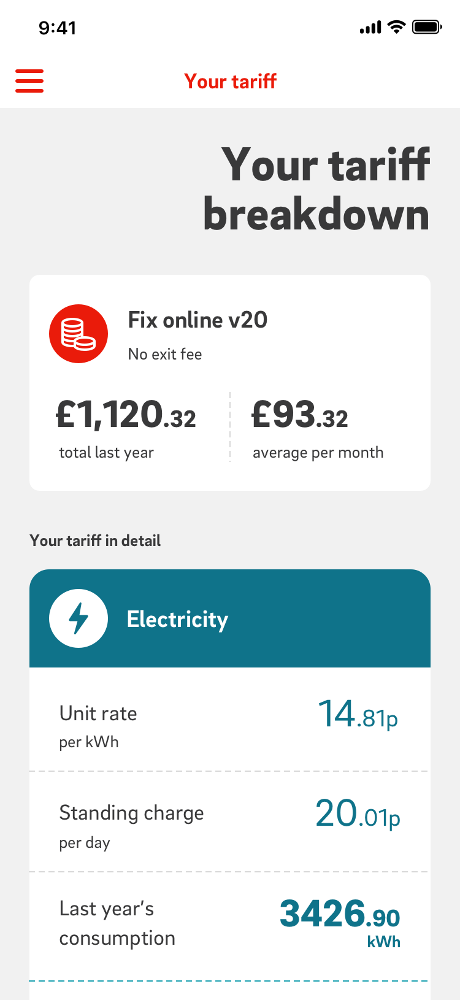
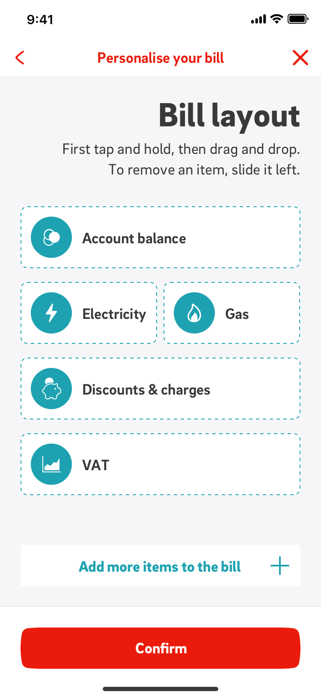
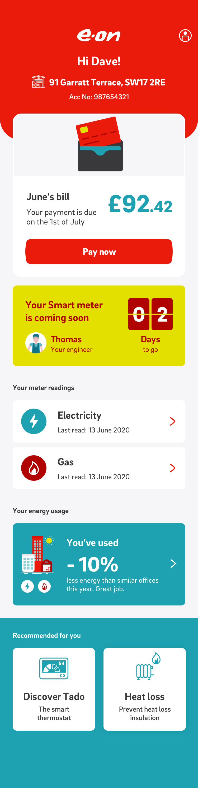
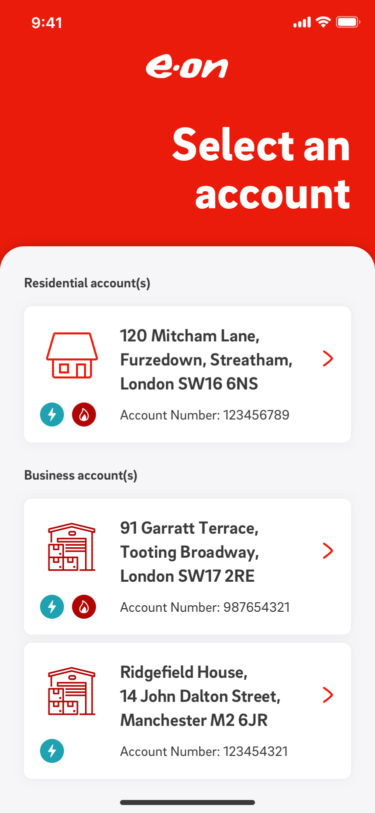
E.ON is one of Europe’s largest energy providers, serving millions of residential customers. Its mobile app is a key service channel for tasks like submitting meter readings, paying bills and contacting support
The app had become harder to navigate and harder to scale
Core tasks like meter readings, bill payments and support were buried across multiple sections, forcing customers to backtrack through the app.
At the same time, the existing structure couldn’t support E.ON’s 24-month roadmap without adding more layers and duplication.
I ran an open card sort with 30 participants to understand how customers grouped and labelled app content. The 37 cards were selected using a year of analytics, alongside key features from E.ON’s 24-month roadmap.
The results showed where the hierarchy could be flattened and which high-frequency tasks needed to be easier to find.
I used the card sort findings to redesign the app’s tier-one and tier-two structure, reducing depth and grouping content around customer expectations. The new structure also gave E.ON room to add future features without another major rethink.
I ran a tree test with 100 customers across nine priority tasks to test the new architecture without the visual design influencing results.
It achieved 86.2% task success, giving us confidence customers could find what they needed before moving into UI design.
Smart-meter booking was the only weak path, with 52% task success. I added a lateral route into Products & Services, which resolved the issue in the next round of testing.
I tested all three against the same nine priority tasks to understand which navigation made the app easiest to use without compromising future growth.
Everything sits behind one menu. Simple to scale, but every journey starts a tap deeper.
Frequent tasks stay visible in the bottom bar, with secondary journeys in the burger menu.
Core journeys stay visible at all times, making frequent tasks quicker and more predictable.
“Nice and easy. Really well laid out and you lead the process, which is really nice.”
“It’s handy it tells you on average what you spend, I’ve not seen that with any other provider.”
“That was perfectly logical and clear on what I needed to do.”
“It’s pretty well presented, I like the graphics and the way it’s done.”
“The daily cost is pretty unique, I’ve never seen that before but it’s helpful.”
“A plus for the layout and clarity of that page.”
One visible navigation system worked better than splitting journeys across a bottom bar and burger menu.
Persistent bottom navigation made frequent tasks like readings, bills and payments easier to predict and reach.
A more tab gave secondary journeys a clear home without competing with primary navigation.
Customers expected tariffs and payment details in my account or on the dashboard.
Support, Products and Services overlapped for journeys like smart meters, moving home and boilers.
Lateral links helped where customers expected more than one valid route to the same task.
Combining Usage and Bills better matched how customers connected consumption with cost.
Graphs, comparisons and contextual explanations added value beyond simple task completion.
I worked closely with a UI designer, product, delivery and engineering to turn the new navigation into build-ready designs, schematics and rules that defined how screens connect and behave.
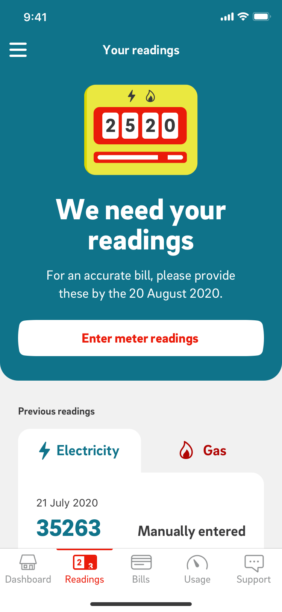
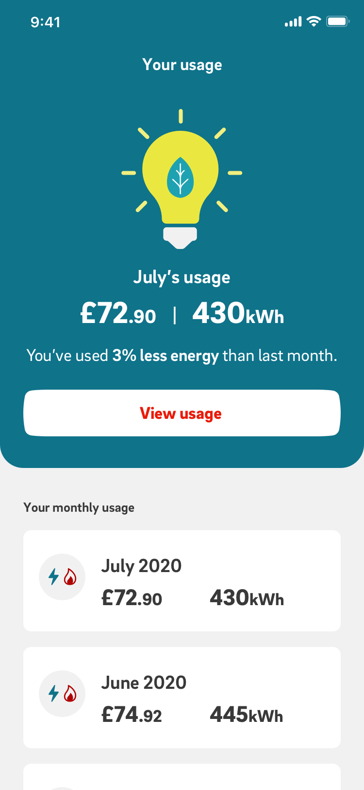
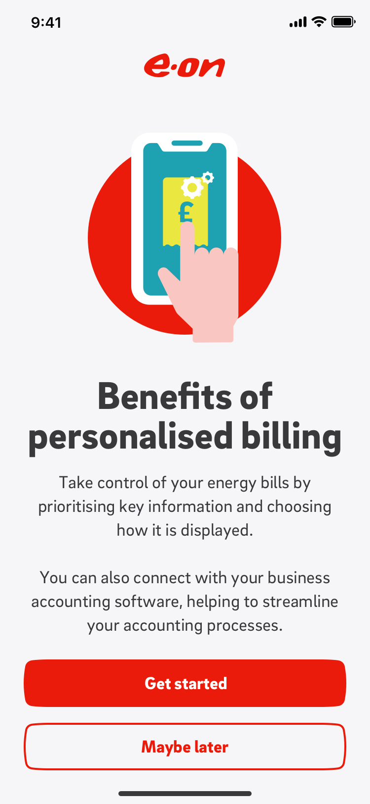
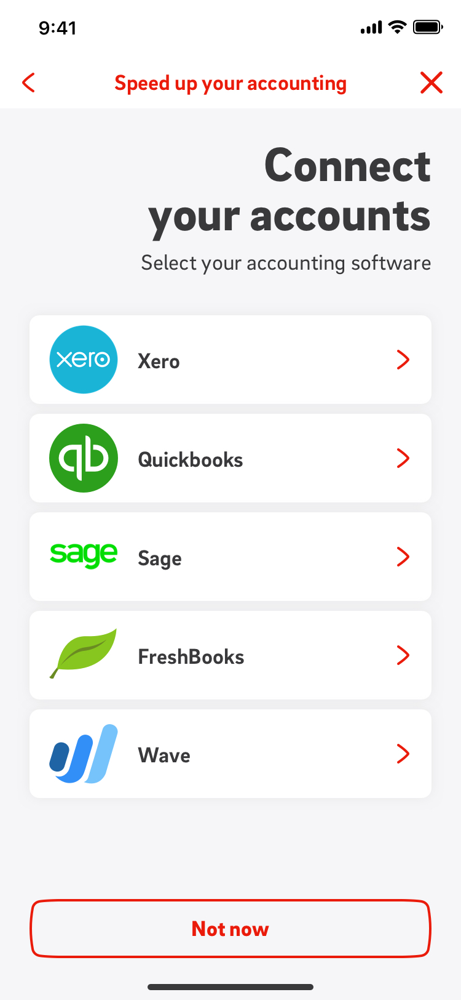
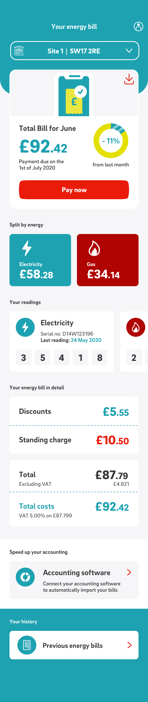
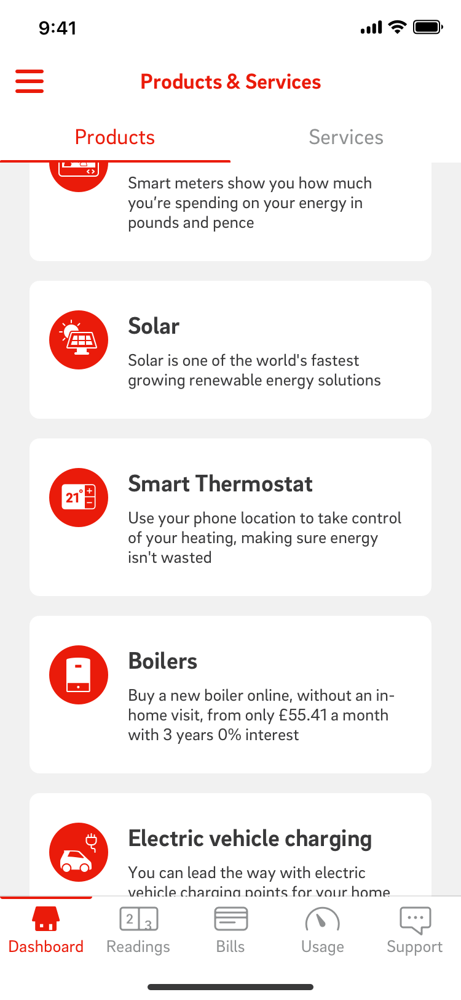
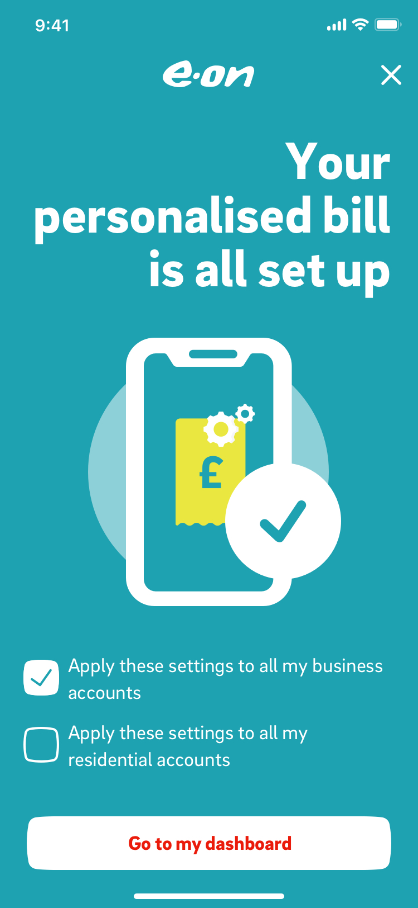
A scalable app structure that improved core journeys and paved the way for E.ON’s 24-month roadmap.